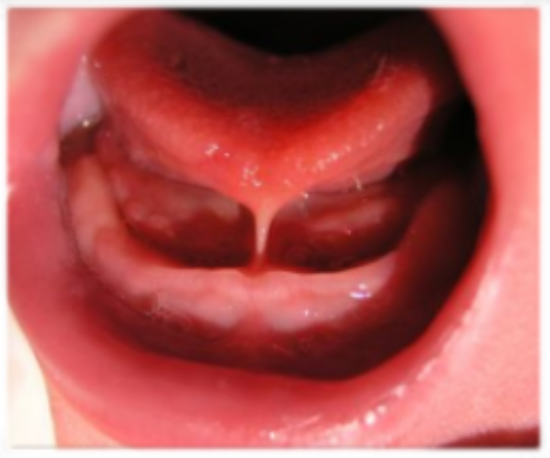
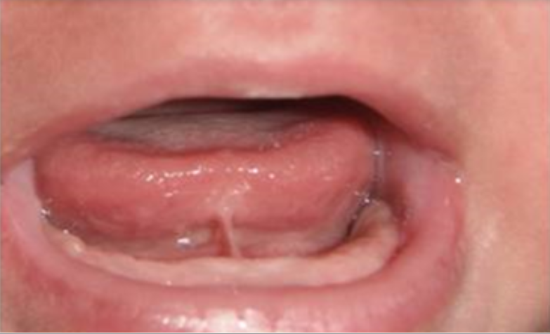
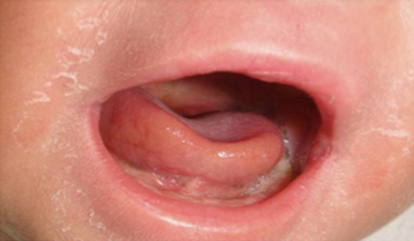
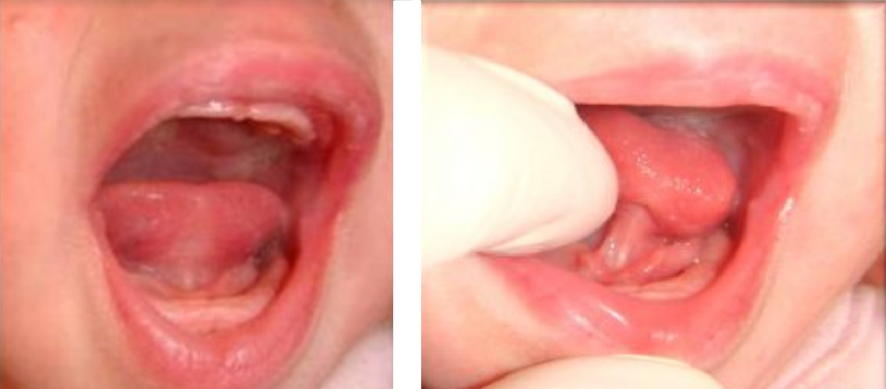
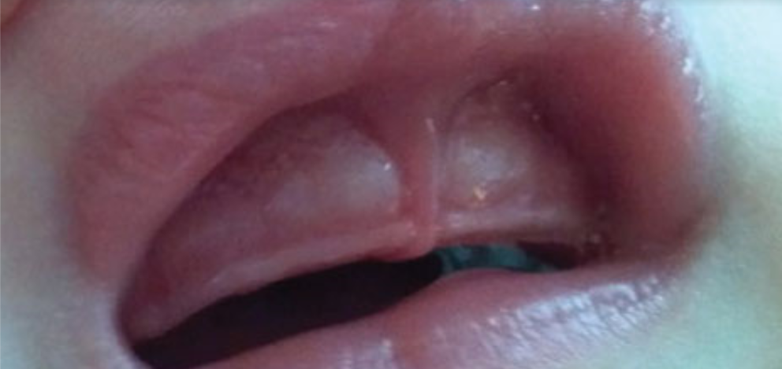
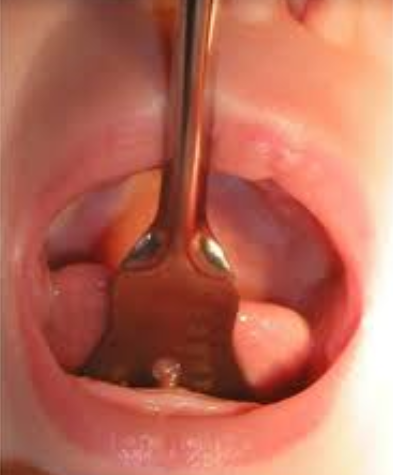
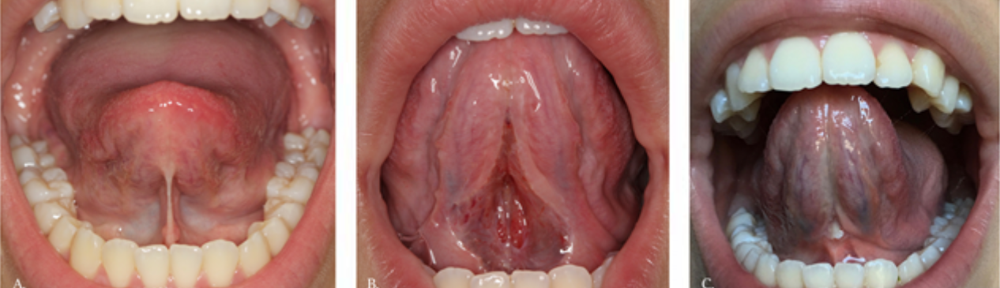

Під'язикова вуздечка: різати чи ні
Автор: Соломія Козловська (лікар-педіатр)
Кожна вагітність – лотерея. Не все можна профілактувати, бо ми ще далеко не все знаємо про причини тих чи інших хворіб; не до всього можна підготуватись, як би людина не намагалась. З народженням дитини завжди отримуєш подарунок, але ніколи не знаєш який. В цій статті хочу розказати про одну з особливостей будови тіла дитини, яка має вплив на її здоров’я та на здоров’я матері цієї дитини. Мова йтиме про під’язикову вуздечку.
Останнім часом тема вуздечок витає в повітрі. Часто молодих батьків запитують про її особливості консультанти з грудного вигодовування. Відповідь на це питання уточнюють у лікаря чи хірурга, якому довіряють. Тактику підбирають залежно від виду вуздечки та її будови.
Насправді поширення анкілоглосії серед дитячого населення невелика та складає, за різними джерелами, 3-18% випадків. Дотепер існує невідповідність у визначенні цієї особливості розвитку дитини та критеріях діагностики. Тому там, де для одних спеціалістів проблема очевидна, інші не звертатимуть на неї уваги. Все тому, що анкілоглосія має свою “точку впливу”, і, якщо не порушується “поле діяльності” конкретного спеціаліста, то йому немає ніякої необхідності діагностувати анкілоглосію. Але якщо ця особливість дитячого розвитку не впливає на роботу в одній системі організму, це не означає, що вона не має впливу на життя конкретної пари “мама-дитя”.
Що ж таке вкорочена під’язикова вуздечка? Це не хвороба, а вроджена вада розвитку ротової порожнини. Під’язикова вуздечка - це слизовий тяж, що з’єднує нижню поверхню язика з деснами нижньої щелепи. Функція вуздечки проста – вкривання м’яза. Тому турбувати вуздечка не мала б, оскільки слизова оболонка не містить ні вровоносних судин, ні нервових закінчень. Але в деяких випадках даний слизовий тяж утруднює мобільність язика, і саме це провокує проблеми. З віком у вуздечку проростають кровоносні судини, що дещо ускладнює лікувальну техніку. Та про лікування пізніше.
Якщо діагностується патологічна вуздечка, то що можливо побачити в такому випадку? З боку дитини можна спостерігати, що їй складно харчуватися з грудей, дитині важко утримувати ареолу грудної залози в ротовій порожнині та здійснювати хвилеподібні рухи язиком, аби добути молоко. В різних дітей реакція на це може бути різною: одні плакатимуть і вимагатимуть зміни способу харчування, інші наполегливо та тривало працюватимуть над своїм «обідом». Часто вкорочення під’язикової вуздечки діагностують після першого місяця життя дитини, коли вага відмовляється показувати цифри більші ніж 340-480 грам від ваги при народженні, при анкілоглосії часто можна побачити мозоль на губах у дитини, який допомагає дитині прикладатись до грудей. Впродовж цього місяця годуюча жінка, ймовірно, пережила не одне травмування грудей, біль при годуванні, лактостази чи навіть мастит, що виникає від неповного спорожнення грудей, можливо, за цей час об’єктивно зменшилася кількість молока.
Якщо говорити про віддалені результати патологічних вуздечок – це часті застудні захворювання (тонзиліт, фарингіт), отит, карієс, порушення формування лицевого скелету, розвиток фоніатричних проблем (труднощі з вимовою звуків), неправильна закладка молочних та постійних зубів, як наслідок, в майбутньому це потребуватиме корекції з використанням різноманітних систем, в т.ч. брекетів, з часом можуть виникати труднощі з жуванням та ковтанням дорослої їжі, аж до відмови від харчування… Як бачите, наслідки некоригованої анкілоглосії доволі поширені, але не кожен повернеться до цієї проблематики і пройде корекцію, щоб усунути цей дефект і забезпечити собі та дитині здорове життя.
Існує декілька класифікацій анкілоглосії. Наведу приклад класифікації по Лоуренсу А. Котлоу
1 тип анкілоглосії – вуздечка з’єднує кінчик язика з нижньою десною. При огляді спостерігається обмеження рухової активності язика, при спробі поговорити з дорослими язик піднімається і візуалізується форма язика, яка нагадує «сердечко», що спрямоване до кореня язика - вуздечка ділить язик на 2 частини. Хтось впізнає цей тип вуздечки завдяки порівнянню з язиком змій. В них він теж поділений, ніби роздвоєний.

2 тип анкілоглосії - вуздечка прикріплена на декілька міліметрів нижче кінчика язика та з’єднує язик з нижньою десною. Немає розділення кінчика язика, але виникає ефект «чашечки», коли тіло язика утворює дно, а краї язика – обвід. Рухливість язика теж порушена.

3 тип анкілоглосії – вуздечка з’єднує середину язика з дном під’язикового простору. За рахунок своєї щільності ця вуздечка теж може формувати вигляд язика по типу «серця»

4 тип анкілоглосії – вуздечка, яка вростає в слизову і не візуалізується як самостійна під’язикова структура. Функціонально діапазон рухів язика зменшений, часто дитина не може викласти язик на нижні десна.

Анкілоглосія потребує огляду в лікаря-хірурга чи лікаря щелепно-лицевої хірургії, який знайомий з даною проблематикою. Окрім них, з анкілоглосією можуть допомогти лікар-стоматолог, отоларинголог та деякі педіатри чи неонатологи.
Окрім укорочення під’язикових вуздечок, зустрічається вкорочення вуздечки верхньої губи, яке утруднює процес захоплення грудної залози при грудному вигодовуванні, оскільки верхня губа неефективно вивертається для цього процесу. При вкороченні вуздечки верхньої губи відбувається порушення позиції перших верхніх зубів. На це варто звертати увагу та консультуватись у лікаря-стоматолога.

В ситуації, коли наявна анкілоглосія і дитина у віці новонародженості, використовується ефективна та щадна техніка корекції - резекція. З віком дитини її проведення неможливе, необхідно застосовувати пластику. Проведення корекції при анкілоглосії не потребує госпіталізації та проведення широкого спектру лабораторних обстежень, не викликає болю, жодним чином не травмує дитину, не потребує обмеження в грудному вигодовуванні, має обмежену кількість протипоказів до проведення корекції. Найкращий час для проведення резекції при анкілоглосії – перші 3 місяці життя дитини.
Протипокази:
1 – інфекції слизових оболонок ротової порожнини;
2 – тяжкий соматичний статус (перебування у відділенні анестезіологічної та інтенсивної терапії новонанароджених: апаратне дихання, парентеральне харчування);
3 – порушення з боку системи згортання крові.
Оскільки під’язикова вуздечка не містить нервових закінчень і не болить, то жодні маніпуляції з нею не викликають болю. Але проведення корекції при анкілоглосії часто супроводжується плачем дитини, і на це є ряд причин:
1 – для проведення корекції потрібно демобілізувати дитину. Для цього її можуть спеленати, що незвично для дитини і може супроводжуватись виявом незгоди.
2 – для візуалізації під’язикової вуздечки хірург миє руки, користується антисептичними засобами, вдягає стерильні рукавиці. Коли дитина відкриває рот, лікар вводить 2 пальці в ротову порожнину дитини у під’язиковий простір. (Ви можете самостійно повторити ці моменти щодо себе, щоб перевірити, які відчуття виникають в цей час. Це не болить. Але не подобається дитині.) Язик дитини може фіксуватися пальцями або спеціальним шпателем.

3 – дотик хірургічного інструменту до анатомічних структур, які мають нервові закінчення, відчувається як дотик «чогось холодного», що теж може провокувати плач через дискомфорт.
4 – можливе окреме перебування дитини та батьків під час проведення корекції. Не кожен мед. заклад пропагує спільне перебування батьків та дитини під час цієї маніпуляції. Деколи, якщо хтось з батьків особливо чутливий та тривожний, в окремому перебуванні, можливо, є сенс.
Після проведення резекції показано раннє прикладання дитини до грудей, оскільки при активному гв відбувається активізація рухової активності язика, що сприяє оптимальному загоюванню слизового тяжу.
Якщо дитина старша 6 місяців, для ліквідації анкілоглосії може бути застосовано пластику. Залежно від віку дитини та типу вуздечки, її проводять під загальною чи місцевою анестезією, перша супроводжується інтубацією та контролем дитячого дихання. Бувають ситуації, коли потрібне не лише однолінійне розсічення вуздечки, а надріз у формі латинської літери «Z» та накладання швів, які з часом розсмоктуються. Час проведення пластики суттєво більший, оскільки потрібна інша підготовка до даної процедури та інша хірургічна техніка.

Оскільки відновлювальні механізми в дитячому організмі працюють перфектно, це може мати негативне значення на пострезекційному етапі. Аби не розвивалися спайки в місці надрізу короткої вуздечки, можна використовувати декілька простих вправ:
1 - «обернене коромисло».
Дитина в положенні на спині. Дорослий, який проводить вправу, має вимиті руки, очікує поки дитина відкриє рот, вводить один вказівний палець в ротову порожнину дитини у під’язиковий простір, описуючи півколо на подобі вигнутого коромисла. Проводячи пальцем під язиком, перевіряє та перешкоджає розвитку спайок між розсіченими краями вкороченої вуздечки.
2 – «прогулянка язичком» - для навчання правильно розміщувати язик при грудному вигодовуванні.
Положення дитини на спині, на руці чи колінах у дорослого. Можливе розміщенння і дещо вертикальніше (нахил близько 15 градусів).
Руки дорослого вимиті.
При відкриванні рота дитини особа, яка проводить вправу, натискає на кінчик язика і утримує натиск до рахунку 3, зменшуючи натиск, але не відриваючись від язика, палець зміщують у напрямку кореня язика і повторюють рахунок. За 1 вправу може бути декілька таких просувань вглиб, до моменту, поки це не провокує рвотний рефлекс. Якщо випадково він запустився, то на наступний раз зупиніться в попередній точці. Вправу варто повторювати до 5 разів за 1 підхід, якщо на це є дозвіл дитини.
3 – «вигладжування язика» - для навчання рухати язиком вперед, прикриваючи нижню десну.
Для проведення вправи потрібна згода дитини та чисті руки «тренера». Коли дитина відкриває рот, в ротову порожнину вводять вказівний палець так, щоб подушечка торкалась верхнього піднебіння. Потрібно дати можливість дитині смоктати палець впродовж 30 секунд. Варто слідкувати, аби дитина не відривала язик від пальця. Після цього палець повертають подушечкою до язика, натискають подушечкою на язик і поступово виймають назовні. Це повторюється декілька разів перед тим, як прикладати дитину до грудей.
Завдання батьків та кожного фахівця, який оглядає дитину, зробити все можливе, щоб дитина росла здоровою. Нехай такі дрібні, але важливі особливості розвитку дитини будуть вчасно помічені та коректовані. Будьте здорові.
Текст - Соломія Кзловська, редагування - Ольга Колодка